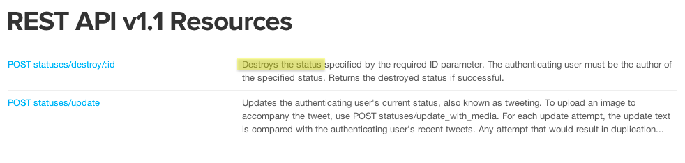
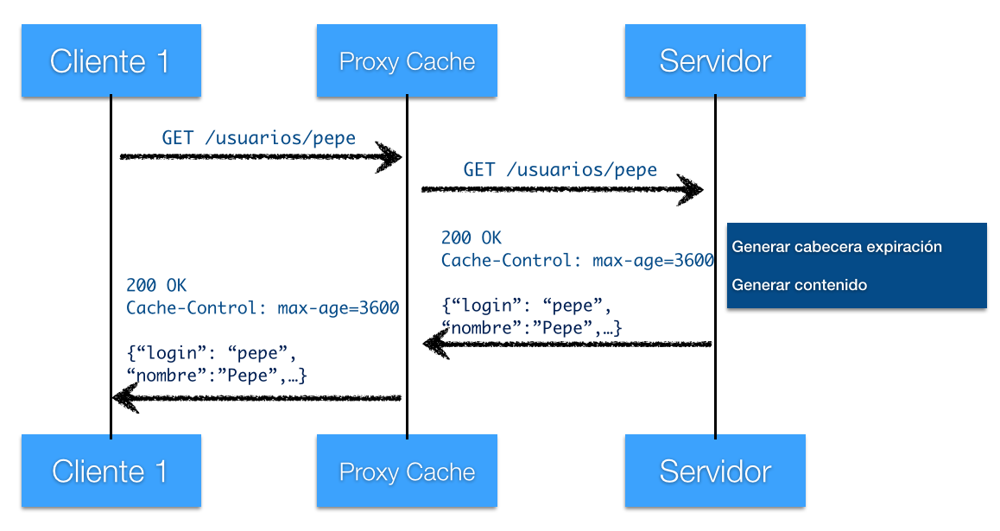
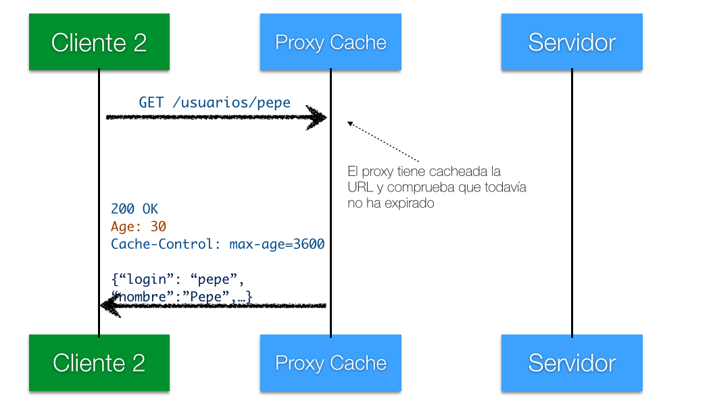
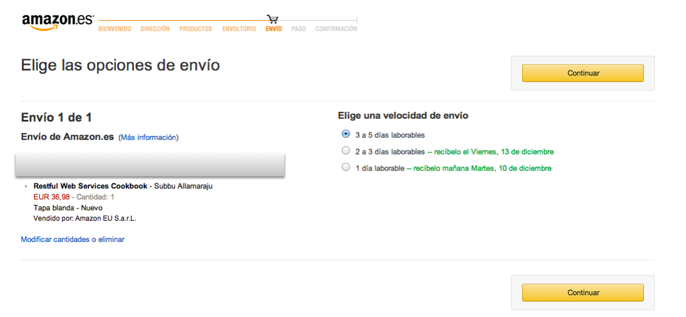

Tema 2
Servicios web REST
Indice
- REST básico
- Diseño de URLs
- Representación de los recursos
- Caches
- HATEOAS
2.1 REST básico
Resumen de REST
Las llamadas al API se implementan como peticiones HTTP, en las que:
- La URL representa el recurso
- El método HTTP representa la operación
- El código de estado HTTP representa el resultado
- Como formato de intercambio de datos usaremos un estándar (normalmente JSON por su legibilidad y facilidad de manejo desde Javascript)
Crear recursos
- En general, la URL estará "abierta", apuntando a la colección de recursos. El nuevo recurso todavía no tiene un
idhttp://api.ua.es/asignaturas/ADI_34039/anuncios http://api.change.org/peticiones/2/firmas - El método debe ser POST
- Excepción: se usaría PUT cuando conocemos el id del recurso (p.ej. insertar alumno identificándolo con DNI)
- Se envía el nuevo recurso en el cuerpo de la petición
{"caducidad":"2014-12-12", "autor":"otto@ua.es", "texto":"mañana no hay clase de teoría"}
Crear recurso con id conocido
Igual que antes, pero
- La URL incluirá el
idhttp://api.ua.es/alumnos/123456J http://api.biblioteca.ua.es/libros/978-3-16-148410-0 - El método será PUT
Crear recurso: resultado
- Estados posibles:
- 201 (Recurso creado correctamente)
- 403 (Acceso prohibido)
- 400 (petición incorrecta, p.ej. falta un campo o su valor no es válido)
- 500 (Error del servidor, p.ej. se ha caído la BD)
- Cómo se devuelve el recurso creado:
- La convención "ortodoxa" es devolver la URL como valor de la cabecera HTTP
Locationde la respuesta
201 CREATED HTTP/1.1 Location: http://api.ua.es/asignaturas/ADI_3409/anuncios/1245 ... - La convención "ortodoxa" es devolver la URL como valor de la cabecera HTTP
- También se puede devolver el recurso en sí en el cuerpo de la respuesta (p.ej. es lo que espera Backbone)
{"id":"1245", "caducidad":"2014-12-12", "autor":"otto@ua.es", "texto":"mañana no hay clase de teoría"}
Actualizar recurso
- URL del recurso ya existente
- Método HTTP PUT
- Nuevos datos: según la ortodoxia REST, actualizar significaría cambiar TODOS los datos.
- PATCH es un nuevo método HTTP (año 2010) para cambiar solo ciertos datos. Algunos servidores/frameworks de programación web todavía no lo soportan.
- Resultados posibles:
- 200 (Recurso modificado correctamente)
- 404 (recurso no existente)
- Errores ya vistos con POST (400, 500, 403 ...)
Eliminar recurso
- URL del recurso a eliminar
- Método DELETE
- Resultados posibles:
- 200 (Recurso eliminado correctamente)
- Errores ya vistos con PUT (400, 403, 404, 500, ...)
- Tras ejecutar el DELETE con éxito, las siguientes peticiones GET a la URL del recurso deberían devolver 404
No es REST todo lo que reluce
REST Formalmente
Tiene su origen en la tesis de Roy Fielding
Implica 6 condiciones:
- Cliente-servidor
- Interfaz uniforme
- Indentificación de los recursos
- Representaciones estándar
- Mensajes auto-descriptivos
- Hypermedia as The Engine of The Application State (HATEOAS)
- Sin estado
- Cacheable
- Capas (proxys de modo transparente)
- Código "bajo demanda" (opcional)

2.2 Diseño de URLs
URLs que no son recursos típicos
- Cálculos, procesamiento de información, búsquedas, etc.
http://api.mapas.com/calcularRuta?inicio=Alicante&fin=Madrid http://api.change.org/peticiones/buscar?titulo=salvemos&ordenarPor=fecha - Operaciones que podrían verse como CRUD pero no de los recursos que vamos a representar
http://api.ua.es/estudiantes/acb34/enviar-smsEsto podría haber sido un "create" del recurso SMS, pero supongamos que hemos decidido no representar los SMS como recurso
Paginación y respuestas parciales
- En búsquedas es común usar paginación de resultados. Normalmente se especifican los resultados deseados con parámetros HTTP
https://graph.facebook.com/10150146071791729/photos?offset=5&limit=2 - Respuestas parciales: no recibir todo el objeto, solo algunos campos
(no hay un estándar)
https://graph.facebook.com/10150146071791729/photos?fields=id,picture http://api.linkedin.com/v1/companies/1337:(id,name,description,logo-url)
Versiones del API
Es una práctica común que la versión del API forme parte de la URL del recurso
http://www.example.org/v1/customer/1234
http://www.example.org/v2/customer/1234
http://www.example.org/customer/1234?version=v3
http://v4.example.org/customer/12342.3 Representación de los recursos
Formato de los datos
Aunque en la actualidad JSON es el formato dominante, no hace mucho lo era XML. En realidad se puede usar cualquier formato estándar, por ejemplo Atom/RSS
en
http://creativecommons.org/licenses/by-nc-sa/2.0/uk/
Mon, 9 Dec 2013 16:33:02 +0000
Mon, 9 Dec 2013 16:33:02 +0000
5
http://www.audioscrobbler.net/data/webservices
RJ's Recently Played Tracks
http://www.last.fm/user/RJ
Last 10 tracks submitted to Last.fm
-
Xzibit – Paparazzi Live And Video
http://www.last.fm/music/Xzibit/_/Paparazzi+Live+And+Video
Mon, 9 Dec 2013 16:33:02 +0000
http://www.last.fm/user/RJ#1386606782
http://www.last.fm/music/Xzibit
...
Ejemplo del API de last.fm
Colecciones de datos
Paginación: se aconseja incluir enlaces a la página anterior/siguiente
{
"total":"150",
"contenido": [
{"titulo":"Juego de tronos", "autor":"George R.R. Martin"},
{"titulo":"El nombre del viento", "autor":"Patrick Rothfuss"},
{"titulo":"El mundo del río", "autor":"Philip Jose Farmer"}
...
]
"link": {
"rel":"prev"
"href":"http://miapi.com/libros?inicio=1&cantidad=10"
}
"link": {
"rel":"next"
"href":"http://miapi.com/libros?inicio=21&cantidad=10"
}
"link": {
"rel":"self"
"href":"http://miapi.com/libros?inicio=11&cantidad=10"
}
}
Ejemplo: paginación en el Graph API de Facebook
{
"data": [
... Endpoint data is here
],
"paging": {
"cursors": {
"after": "MTAxNTExOTQ1MjAwNzI5NDE=",
"before": "NDMyNzQyODI3OTQw"
},
"previous": "https://graph.facebook.com/me/albums?limit=25&before=NDMyNzQyODI3OTQw",
"next": "https://graph.facebook.com/me/albums?limit=25&after=MTAxNTExOTQ1MjAwNzI5NDE="
}
}
Negociación del contenido
- El "formato" se especifica con el "MIME media type"
- El cliente indica las preferencias con la cabecera
Accept- El parámetro
qindica el "quality value" o valor de preferencia: (1.0 el preferido, 0.0 no aceptado)
- El parámetro
Accept-CharsetyAccept-Languageespecifican las preferencias de codificación de caracteres e idioma, resp.Accept-encodingpermite usar compresión (el servidor debe enviar los datos comprimidos). En Ruby,use Rack::Deflater
Accept: application/xml;q=1.0, application/json;q=0.5, */*;q=0.0
Accept-Language: es;q=1.0, en;q=0.5
Accept-Charset: utf-8
Accept-Encoding: gzip
Implementar la negociación
Podríamos analizar manualmente las cabeceras, pero varios frameworks, p.ej. Rails, implementan "negociación automática". Para algo parecido en Sinatra necesitamos alguna librería adicional (como rack-conneg)
get '/hello' do
response = { :message => 'Hello, World!' }
respond_to do |wants|
wants.json { response.to_json }
wants.xml { response.to_xml }
wants.other {
content_type 'text/plain'
error 406, "Not Acceptable"
}
end
endEspecificar formato en "APIs reales"
Aunque la visión ortodoxa es que se debe usar la cabecera HTTP Accept, los APIs "de ahí fuera" usan métodos más heterodoxos
flickr.com/services/api/flickr.photos.search?tags=gatitos&format=xml
#Esta es la Versión antigua (v1). Twitter ya solo genera JSON (v1.1)
https://api.twitter.com/1/statuses/user_timeline.json?user_id=UA_Universidad
En la actualidad varios APIs ya solo generan JSON (p.ej. Facebook, Foursquare, Twitter)
2.4 Caches
Caches
- En lugar a volver a generar una respuesta, reutilizar la anterior
- Puede haber caches a diferentes niveles
- En la propia aplicación
- En el lado del servidor (reverse proxy cache)
- En las proximidades del cliente (forward proxy cache)
- En el propio navegador
Cache con expiración
- La cache se controla con cabeceras HTTP
- En el modo de expiración especificamos cuánto tiempo cachear la información (en segundos)
- En HTTP 1.0 se fijaba la "fecha de caducidad" (problemático por la necesaria "sincronización de relojes" entre cliente y servidor)
- Con "private" indicaríamos que no es cacheable en caches compartidas
HTTP/1.1 200 OK
Content-Type: text/html;charset=utf-8
Cache-Control: public, max-age=3600
Expires: Mon, 09 Dec 2013 09:57:27 GMT #esto es de HTTP/1.0
Content-Length: 163
...
Ejemplo de cache con expiración
Ejemplo de cache con expiración (II)
30 segundos después llega otra petición de otro cliente a la misma URL
Cache con validación
- No siempre es fácil dar un plazo de "caducidad" para los datos
- Alternativa: preguntar en la petición si los datos son más nuevos que la última "versión" que tenemos. ¿Cómo saberlo?
- Por fecha de modificación (cabecera
If-modified-since) - Con una "etiqueta de versión": un identificador único para la versión actual de los datos (cabecera
If-none-match)
- Por fecha de modificación (cabecera
- Petición condicional: si en la petición se incluye fecha de modificación o etiqueta y los datos no han cambiado, el servidor responderá con un
304 Not modifiedpero no enviará los datos en sí
Ejemplo en Sinatra
Cache con expiración
get ‘/usuarios/:login’ do
usuario = UsuarioBD.get(params[:login])
expires 3600
#también se podría haber hecho "manualmente" con
#headers ‘Cache-Control’ => ‘max-age=3600’
usuario.to_json
end
2.5 HATEOAS
Hypermedia As The Engine Of The Application State
Problema: dependencia de las URL
- Tal y como hemos implementado hasta ahora los servicios REST para realizar una operación necesitamos conocer previamente la URL del recurso
- Esto presenta el problema adicional de que no podemos modificar las URL sin "romper" los clientes actuales
¿Qué es HATEOAS?
Imitar el funcionamiento de la web, en la que para seguir los pasos en un flujo vamos saltando entre enlaces, sin necesidad de conocer previamente las URL
Hipermedia en REST
En cada respuesta debemos incluir enlaces con las operaciones posibles y los recursos directamente relacionados
{
"id":"1",
"items": [
{"id":"12", "cantidad":"1"},
{"id":"1123", "cantidad":"2"}
]
"link": {
"rel": "self",
"href": "http://miapi.com/pedidos/1"
},
"link": {
"rel": "items",
"href": "http://miapi.com/pedidos/1/items"
},
"link": {
"rel": "pagar",
"href": "http://miapi.com/pagos/pedidos/1"
}
}